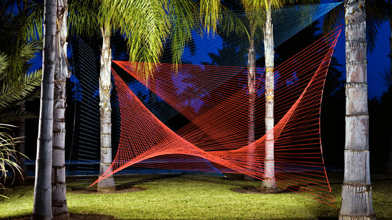

minimal

Sebastien Preschoux
http://www.sebastienpreschoux.com/-どんな人
糸を使った幾何学的なインスタレーション作品を多く作っている、フランスのアーティストです。元デザイナーで、Audiとコラボしたり、MVのセットに作品が使われるなど商業的な分野でも積極的に活動しています。
-解説
木に杭を打ち込み、ワイヤーを通しその線に沿って糸を張っています。自然界の中に幾何学的な曲線が浮かび上がっているために、不思議な空間が作り出されています。糸という軽い素材で作られているので浮遊感のある形に仕上がっています。
-好きなところ
コンピューターで書いたような形が、自然界の中に存在していて、しかも浮かび上がっているようにみえるというところが好きです。なんの変哲もない場所でも、一つ非日常的なものを配置することで、空間の印象をガラッと変えることができる、そんな感想をこの作品を見て持ちました。